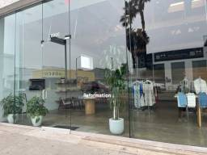

Retail Dive - Latest News
フィード
Bed Bath & Beyond’s new concept takes a page from original format
Retail Dive - Latest News
The store, with familiar elements like the towel wall and coupons, comes as its parent company reported strong revenue gains driven by recent acquisitions.
20時間前
The Children’s Place shakes up leadership amid bankruptcy rumors
Retail Dive - Latest News
With various executives and directors out, including the CEO, the children’s apparel retailer’s CFO has taken over as principal executive officer.
20時間前
Under Armour to sell more full-price product at outlet stores
Retail Dive - Latest News
The move is part of a broader store revamp and comes as the athletics brand tries to increase its premium positioning in the market.
20時間前

Reformation implements new AI planning tool, helping in-stock rates
Retail Dive - Latest News
The apparel brand's Q3 net revenue jumped 19% and analysts remarked on its strong performance as a newly public company.
20時間前
As Barbie stumbles, Mattel cuts forecast ahead of the holidays
Retail Dive - Latest News
When asked if he had a catchphrase or mission statement, CEO Roger Lynch on his first earnings call said, “Oh give me a break, I just got here.”
21時間前
The Weekly Closeout: What’s next for CVS retail and Canada Goose net loss widens
Retail Dive - Latest News
The separation of CVS Health could present an opportunity for its retail pharmacies. Meanwhile, higher costs are impacting the luxury apparel brand.
1日前
Walmart ramps up Sparky features in time for the holidays
Retail Dive - Latest News
New visual recognition and cart generation capabilities for the AI assistant aim to ease the pain of holiday shopping, both online and in stores.
2日前
Amazon adds over 100 Alexa for Shopping functions
Retail Dive - Latest News
New capabilities include managing subscriptions, resolving billing questions, and creating and editing lists and registries.
2日前
Ikea leans into events for the holidays
Retail Dive - Latest News
Two locations will feature outdoor markets, while all stores will host holiday events this month. The furniture retailer also expanded its assortment.
2日前
E.l.f. Beauty growth driven by innovation, not just pricing power
Retail Dive - Latest News
The company’s Q2 net sales jumped 51%, with industry analysts in awe of its go-to-market capabilities and Rhode brand strength.
2日前